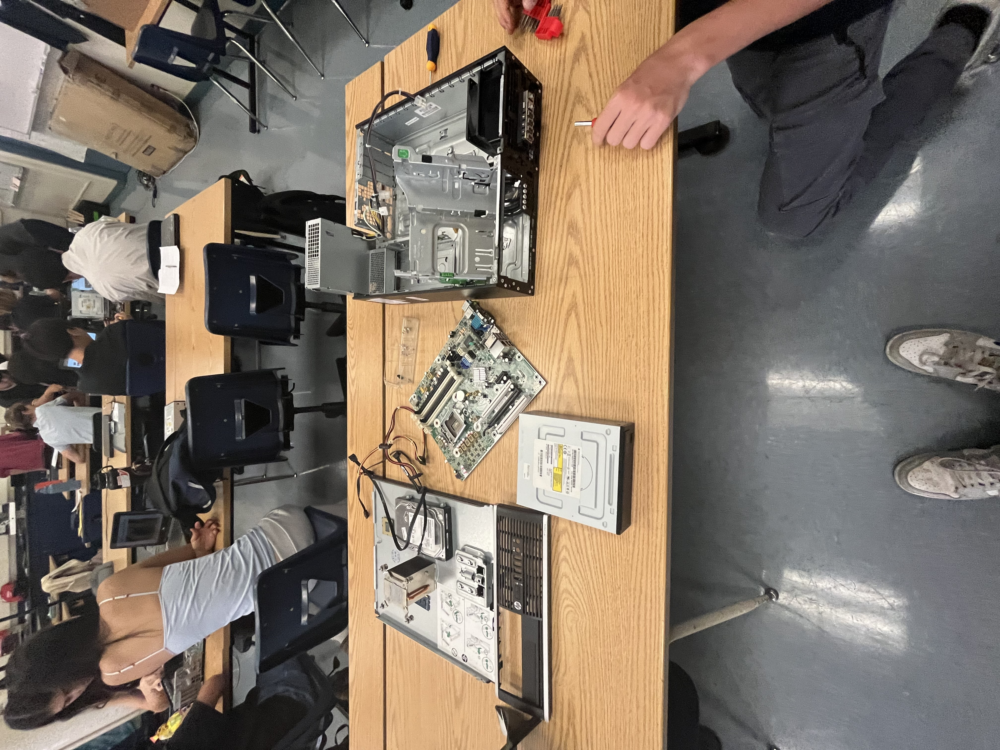
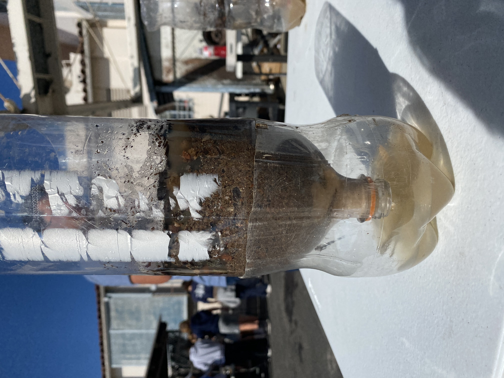
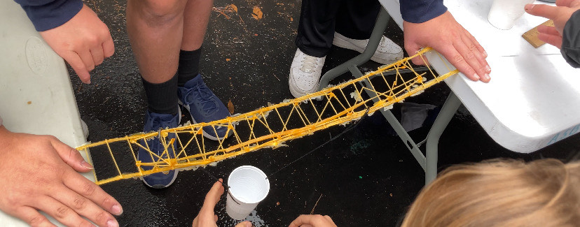
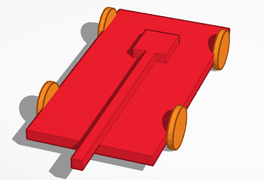
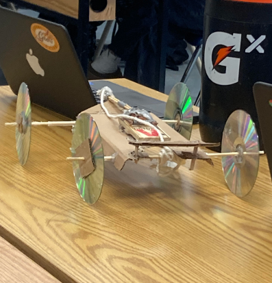

<html lang="en">
<head>
    <meta charset="UTF-8">
    <meta name="viewport" content="width=device-width, initial-scale=1.0">
    <title>Round Button Example</title>
    <style>
        /* CSS for the button */
        .button {
            background-color: #000000; /* Black background */
            border: none; /* No border */
            color: white; /* White text */
            padding: 15px 32px; /* Padding */
            text-align: center; /* Center text */
            text-decoration: none; /* No text decoration */
            display: inline-block; /* Display as inline-block */
            font-size: 16px; /* Font size */
            margin: 0; /* Remove default margin */
            position: fixed; /* Fixed positioning */
            bottom: 20px; /* Distance from bottom */
            left: 20px; /* Distance from left */
            transition-duration: 0.4s; /* Transition duration */
            cursor: pointer; /* Cursor pointer */
            border-radius: 25px; /* Rounded edges */
        }

        /* CSS for button hover effect */
        .button:hover {
            background-color: #333333; /* Darker black on hover */
        }
    </style>
</head>
<body>

<!-- Button that takes you to page 2 -->

</body>
</html>


<html lang="en">
<head>
<meta charset="UTF-8">
<meta name="viewport" content="width=device-width, initial-scale=1.0">
<title>Music Player</title>
<link rel="stylesheet" href="https://cdnjs.cloudflare.com/ajax/libs/font-awesome/5.15.4/css/all.min.css">
<style>
    .music-player {
        position: fixed;
        bottom: 20px;
        right: 20px;
        background-color: #333;
        color: #fff;
        border-radius: 20px; /* Adjust this value to increase or decrease the roundness */
        padding: 10px;
        transition: transform 0.3s ease;
        z-index: 999;
    }

    .music-player:hover {
        transform: translateX(-150px);
    }

    .music-controls i {
        margin: 0 5px;
        cursor: pointer;
    }

    .search-input {
        width: 80%;
        padding: 5px;
        border-radius: 5px;
        border: none;
    }

    .search-btn {
        padding: 5px 10px;
        background-color: #444;
        color: #fff;
        border: none;
        border-radius: 5px;
        cursor: pointer;
    }

    /* Rounded top corners for the image */
    .music-player img {
        border-radius: 50%; /* Round the image */
        width: 50%; /* Half the size */
        display: block;
        margin: 0 auto 10px; /* Center the image and add some margin */
    }
</style>
</head>
<body>

<div class="music-player">
    
    <div class="music-controls">
        <i class="fas fa-backward" id="backward"></i>
        <i class="fas fa-pause" id="pause"></i>
        <i class="fas fa-forward" id="forward"></i>
    </div>
    <input type="text" class="search-input" placeholder="Search for music">
    <button class="search-btn"><i class="fas fa-search"></i></button>
</div>

<script>
// Function to search for tracks on Spotify
function searchSpotify(query) {
    const clientId = 'YOUR_CLIENT_ID'; // Your Spotify client ID
    const accessToken = 'YOUR_ACCESS_TOKEN'; // Your Spotify access token (obtained through authentication)
    const apiUrl = `https://api.spotify.com/v1/search?q=${encodeURIComponent(query)}&type=track`;

    fetch(apiUrl, {
        headers: {
            'Authorization': `Bearer ${accessToken}`
        }
    })
    .then(response => response.json())
    .then(data => {
        // Process search results and display them in your application
        console.log(data);
    })
    .catch(error => {
        console.error('Error searching Spotify:', error);
    });
}

// Example usage: Search for tracks
searchSpotify('Despacito');

</script>

</body>
</html>

</script>

</body>
</html>

<html lang="en">
<head>
    <meta charset="UTF-8">
    <meta name="viewport" content="width=device-width, initial-scale=1.0">
    <title>Navigation Bar</title>
    <style>
        /* Style for the navigation bar */
        .navbar {
            background-color: black;
            overflow: hidden;
            border-radius: 10px;
            display: flex;
            justify-content: space-between;
            align-items: center;
            padding: 10px;
        }

        /* Style for the links inside the navigation bar */
        .navbar a {
            color: white;
            text-decoration: none;
            padding: 10px 20px;
        }

        /* Style for the links on hover */
        .navbar a:hover {
            background-color: rgba(255, 255, 255, 0.2);
            border-radius: 10px;
        }
    </style>
</head>
<body>

<div class="navbar">
    <div class="section">
        <a href="#home">Home</a>
    </div>
    <div class="section">
        <a href="#about">About</a>
    </div>
    <div class="section">
        <a href="#services">Services</a>
    </div>
    <div class="section">
        <a href="#contact">Contact</a>
        
    </div>
</div>

<!-- Your website content goes here -->

</body>
</html>

<html lang="en">
<head>
    <meta charset="UTF-8">
    <meta name="viewport" content="width=device-width, initial-scale=1.0">
    <title>Your AWS Website</title>
  <style>
body {
  background-image: url('background2.jpg');
  background-repeat: no-repeat;
  background-attachment: fixed;
  background-size: cover;
}

</style>

</html>

    </body>
</head>
<center body>
    <header>
        <h1>Welcome to Intro-To-Engineering</h1>
    </header>
</body>
<body>
      <form id="quiz-form">
  <h2>Rate the website!</h2>
  <input type="radio" name="q1" value="10/10"> 10/10
  <input type="radio" name="q1" value="100/10"> 100/10
  <input type="radio" name="q1" value="100million/10"> 100million/10
  <button onclick="checkAnswer()">Submit</button>
</form>
</body>
<body>
    
     <body>
    
     </body>

<body>
     <body>
         <head>
              <style type="text/css">
              body {
                  text-align : left;
              }
              
          </style>
         </head>
        <h2>Mechanical Engineering - Rube Goldburg Machine (9/8/23-9/15/23)</h2>
        <p>My team and i worked on Tinker-Cad to create a general idea of what we wanted to do for our 
        engineering project. We designed our project to make the marble start at the top and then follow 
        the road down and then push the hotwheel to pop the balloon. For the design i did most of it but 
        we had many difficulties.</p>
         
</body>
   
<center body>
    <video width="320" height="240" controls>
  <source src="IMG_7222.MOV" type="video/mp4">
</video>

<body>
    <p>We had difficulties with our first idea, because when we started to build we noticed it would be 
    very hard to make the marble fall on the box and make it lift the other one like a weight machine 
    and bring up the baseball and make it knock over dominoes that would keep falling until it hit the 
    hotwheel and then make it pop the balloon.</p>
<body>
    </img>
</body>
</body>
<body>
    <section>
        <h2>Computer Engineering - Computer Disection (9/29/23)</h2>
        <p>For this project we had to dissasemble a desktop and figure out how to assemble it again, 
        it was fun to do it and to be able to build it back again because i really love to build pcs.
        For this unit, computer engineering, our main project was disecting a computer. Following the 
        directions given on Google Classroom, we identified pieces and cables in the computer that we 
        needed to detach in a certain order, and after a bit of trial and error, we managed to completely 
        dissassemble and then re-assemble the computer! Only thing being, it didn't actually turn on when 
        we were done, though we don't really know if it was supposed to work anyway.</p>
        </img>
    </section>
</body>
<body>
    <section>
        <h2>Bioengineering - Hand (10/3/23)</h2>
        <p>We're starting a bioengineering unit now. We saw some pretty cool videos on the uses of bioengineering, 
        such silicone artificial heart and the robot cheetah.

Our main project this time was making a prosthetic hand out of cardboard, rubber bands, and string. It ended up being a bit of a tricky project, because our hand wasn't exactly simple or elegent. We didn't use string but rather the metal wire that Duncan brought, which made it look cool but kind of janky, unfortunately.
-Today we decided to work on a prosthenic arm. The context behind this was that we wathed a video about how prsthenic arms could help humans in the real world. Although, if there is a malfunction, they could hurt really bad or the subject and the person doing the action. Me and my partner were taking the easy but simple approach, which meant that we used cardboard, but we traced our hands onto it and made the fingers a bit longer. After that, we added rubber bands on each bending part of each finger, and then after that we decided to make string to attach all of the fingers and we were able to pick up the water bottle in the end.</p>
    </img>
    </section>
    
</body>
<body>
    <section>
        <h2>Aerodynamics - Bottle Rockets</h2>
        <p>For our aerodynamics unit, we did another classic science project: bottle rockets! This turned out to be quite a bit more 
        intensive than I thought it would be, and there were definitely more details than I there would be. For example: how to 
        attach the parachute, or how to attach the cap, or how to attach the fins. There were many different ways we could do each thing, 
        but through brainstorming and a bit of trial and error, Duncan and I created a pretty neat rocket with a plastic bag parachute 
        inside a bottle nose, diagonally-placed fins, and quite a bit of super glue.</p>
        </img>
    </section>
</body>
<body>
    <section>
        <h2>Bottle Filter</h2>
        <p>This week we learned about environmental engineering. First, we went over slides and took notes about enviornmental engineering and the many features of it. It consists of the integration of science and engineering principles to improve the natrual environment to provide healthy water, air, and land for human habitation and for other organisms, and to remediate pollution sites. Our activity for the unit was to create a water filter that could filter nasty water into somewhat clear water (picture below). First, we got a bottle and put cotton balls, sand, and then some rocks, with the cotton balls at the bottom and the rocks at the top. We got a scooper and we dumped the dirty water into our bottle, with a cup on the bottom that collected the filtered water. We noticed that the cotton balls got dirtier over time as water passed through. We ended up with somewhat clear water, but after trying to keep filtering the water, it just got dirtier, so we stopped. The cotton balls were probably dirty, which is what made it fail. Images are below. That's all for today!</p>
        </img>
        <source src="filter.mp4" type="video/mp4" />   
    </section>
    
</body>

<body>
    <h2>  11/3/2023 - Circuit Building</h2>
    <p>
This week, we learned about Electrical Engineering and about how circuits worked. We first got two worksheets 
about engineering and filled them out. One of them was just the notes on the Electrical Engineering Unit, 
while the other worksheet contained the Ohm's Law and many example problems. Thankfully, I already had an 
idea of the equations from my AP Physics 2 class, so I didn't have trouble filling it out. Afterwards, we 
worked on TinkerCad to complete labs that were given to us. We learned to make series and parallels in the 
labs. Although actually making the labs was pretty difficult, I think it was a fun activity to actually 
try making circuits of our own as we got to play with it. Later, we would start working on actually making 
circuits on a real breadboard.

    </p>
</body>

<body>
    <h2>Bridge Project</h2>
    <p>The weight of our bridge was 32.7 grams.
The weight held by our bridge was 447 grams.
The ratio of weight of bridge to weight held was 1:13.7
The heaviest part of our bridge was the edges or sides of our bridge. We made those the heaviest because it will distribute the tension force from the bucket and the gravitational force. Stacking the spaghetti sticks on top of each other mostly made the weight of the bridge.
The design of our bridge mostly came from our minds. However, we also got inspiration on the internet of other bridges to see how a bridge can hold up and function. We saw that these bridges often distributed their weight in one way or another. Therefore we tried to create a bridge that is even in the weight.
The design of the bridge was not what we intended and it was worse than we expected since our prototype of the bridge was better at holding the weight than the actual product.
The point of failure of our bridge was not stabilizing the middle of the bridge. This was the expected weak point since we saw that the bridge was bending too much when we held it.
I can try to put more spaghetti's to stabilize the bridge since it can snap in the middle. However, the weight of the middle can still prolong points of failure.</p>
</img>
</body>

  <body>
    <h2>1/29/24 TinkerCad mousetrap</h2>
    <p>Over the past 2 weeks, we researched, brainstormed, sketched, and CADded our mousetrap car.
First, we watched a video about Mark Rober's mousetrap car in order to learn the basics and
fundamentals of making a mousetrap car. Then, we wrote down notes and started sketching out the
design of our car. After we designed and wrote the measurements of our car, we CADded out the
car. Finally, we uploaded both the sketch and CAD onto an assignment. We also filled out a packet
containing notes about mousetrap cars.</p>
</img>
</body>

<body>
    <h2>2/14/24 Mousetrapcar physical</h2>
    <p>We are continuing with our mousetrap car project. Mark and I started building our car with cardboard
, straws, wooden sticks, a mousetrap, string, and hot glue. We struggled in the beginning part of
constructing our car. We had to go through multiple iterations because the dimensions of the cardboard
were off. After multiple classes and help from other students, we finally got the finished product.
Our car travelled 22 ft. However, we still have more iterations that we will have to complete.</p>

</img>
</body>

<body>
    <h2>
        2/18/24 mousetrapcar present
    </h2>
    <p>We set our completed mousetrap car aside and tried experimenting with a completely new design. We started
completely over from scratch with new materials and got to work. We tried working with two wheels on the inside
of the car instead of all four outside. We also tried a wider and longer base with a much longer rod.
After we completed the second car, we went straight to testing it. Although the second car looked shabby and rushed,
we still had faith in it to go far. However, it ended up only travelling 2 feet. We figured that because the rod
was too long, it had too much tension in the string, causing the car to barely move. Being disappointed with our second
design, we set it aside and went back to working and modifying our first and orignal car. We tried experimenting with the
rod length to make it travel farther. By slightly extending the length of the rod, we were able to make it travel significantly
farther. Satisfied with our final design, we used it as our final iteration/design. We conducted a class test,
and received 3rd place out of 4 teams we were competing with.</p>

</body>

<body>
    <h2> 3/4/2024 - Egg Drop Project: Design and CAD</h2>
    <p>
After the Arduino Car Project, we began on the design of the Egg Drop project. Dominic and I partnered up again and started 
working on the design easily. At first, we decided to implement a trash bag filled to the brim with cotton balls around the 
egg in the hopes of reducing the impact through the increasing the duration of the impact, resulting in a greater impulse of 
not force, but of seconds. The cotton balls will help the egg to deaccelerate in a greater amount of time to reduce the amount 
of force directly inflicting the egg. This is similar to cars as the cars need to have a weak but long bumper that gets smashed 
on impact to reduce the amount of force acted upon the passenger in the vehicle. But, we realized that we cannot receive more 
than 30 cottonballs, so we opted to crumpled paper as additional filler. In addition, we decided on a hard frame on the inside 
consisting of straws to reduce the impact of the drop in addition to keeping the egg in place to make sure that the egg does not 
move out of place to receive the impact of the drop while avoiding the actual filler consisting of cotton and crumpled paper. 
We will begin on the project on Wednesday when we meet again.

    </p>
    
</body>

    <footer>
      
    </footer>
</body>

<html>
    